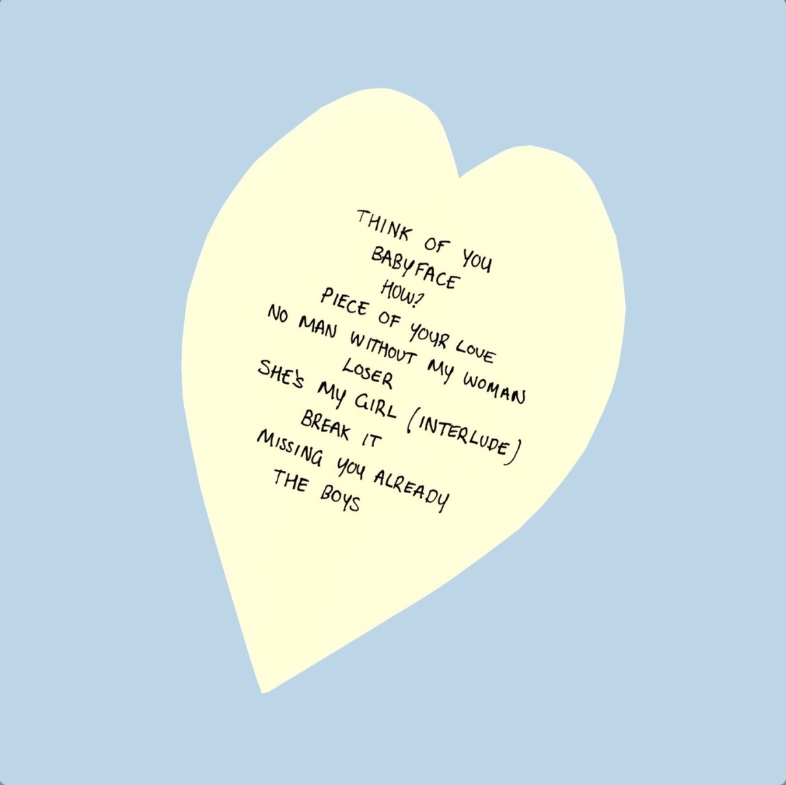

Music
Songs I Wrote Since She Left

Songs I Wrote Since She Left is GRESLEY’s first album. It was released on April 24, 2026.
Tracklist
- Think of You
- Babyface
- How?
- Piece of Your Love
- No Man Without My Woman
- Loser
- She’s My Girl (Interlude)
- Break It
- Missing You Already
- The Boys
Handwritten Tracklist Artwork

Singles
- How?
Released January 29, 2026. The debut GRESLEY solo single. - Babyface
Released February 27, 2026. The second single from Songs I Wrote Since She Left. - Think of You
Released March 27, 2026. The third single from Songs I Wrote Since She Left.
Song Notes
How? — The debut solo single and a key live opener.
Babyface — The second single and a fan favorite from the early live shows.
Think of You — The third single and one of the emotional centerpieces of the album.
Piece of Your Love — A major live closer in the early GRESLEY era.
Stunna — Known unreleased song performed live.